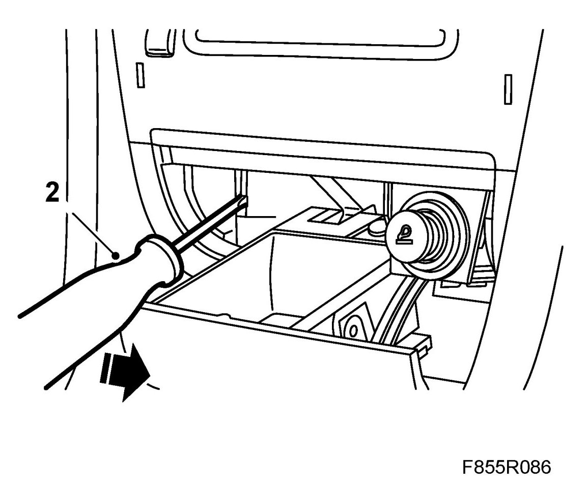
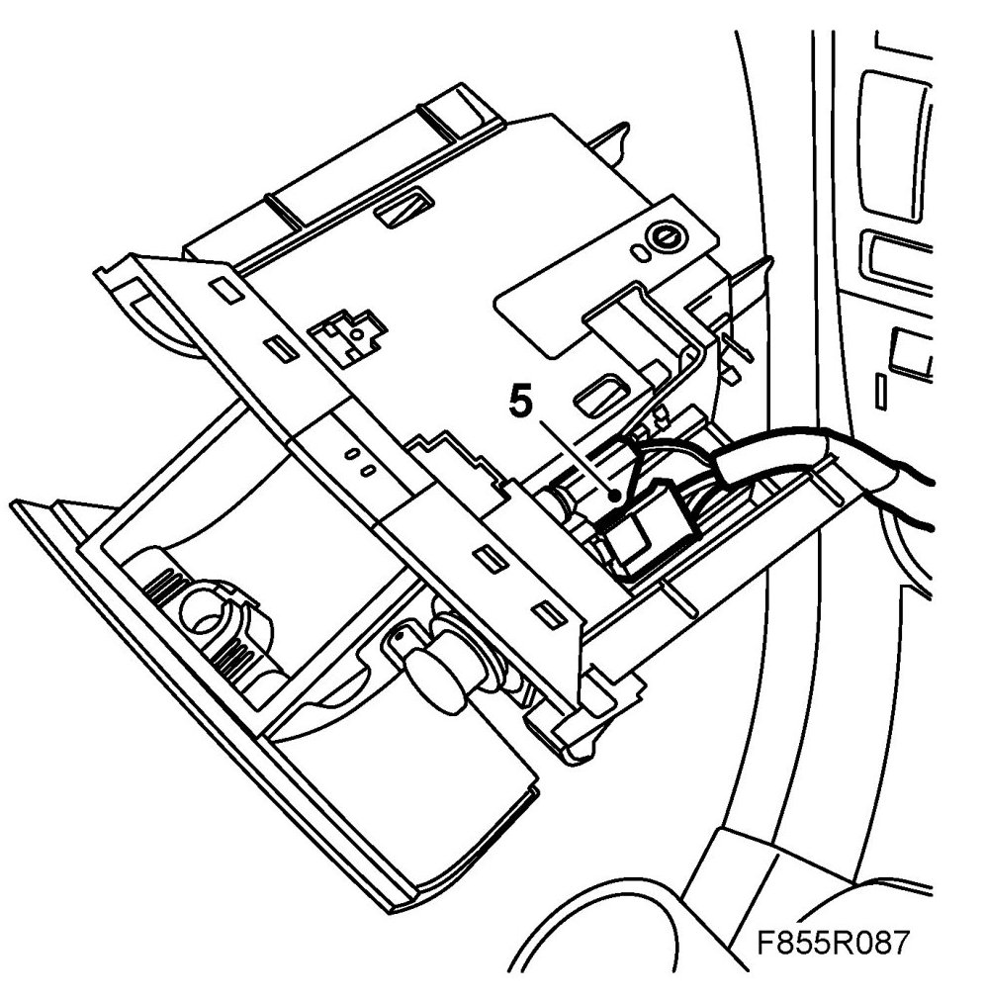
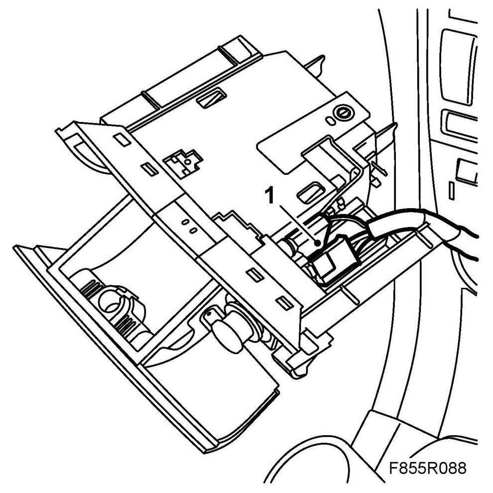
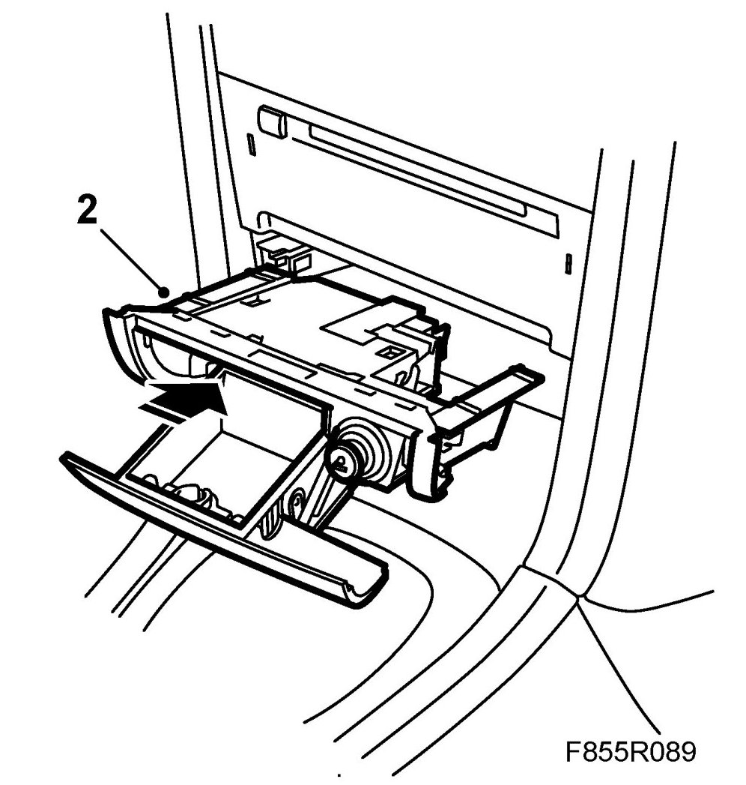

Ash Tray: Service and Repair
Ashtray
To remove
1. Pull out the ashtray.
2. Carefully lever out, with for example a screwdriver, the left-hand ashtray locking clip a few millimeters.

3. Carefully pull out the left hand side of the ashtray so that the locking clip disengages.
4. Twist the whole ashtray to the left so that the right-hand clip disengages.
5. Pull the ashtray straight out and disconnect the cigarette lighter and lighting connections.

To fit
1. Reconnect the cigarette lighter and lighting connections.

2. Push the ashtray straight in to its fitting.

3. Check that the locking clips engage on both sides.